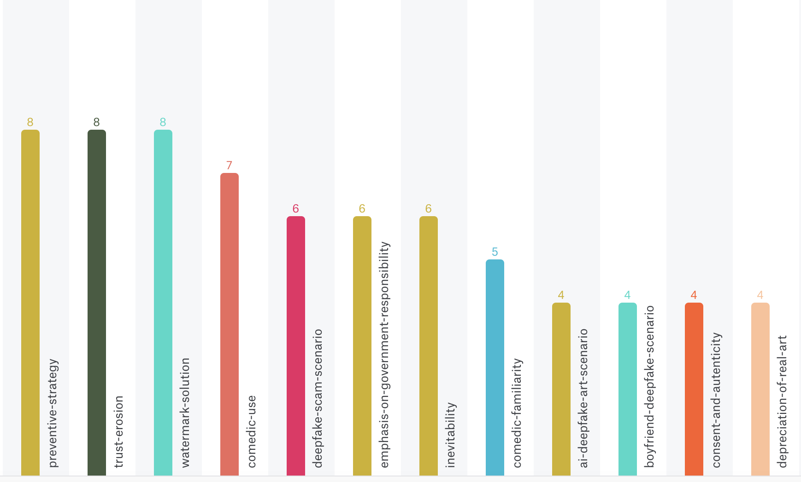
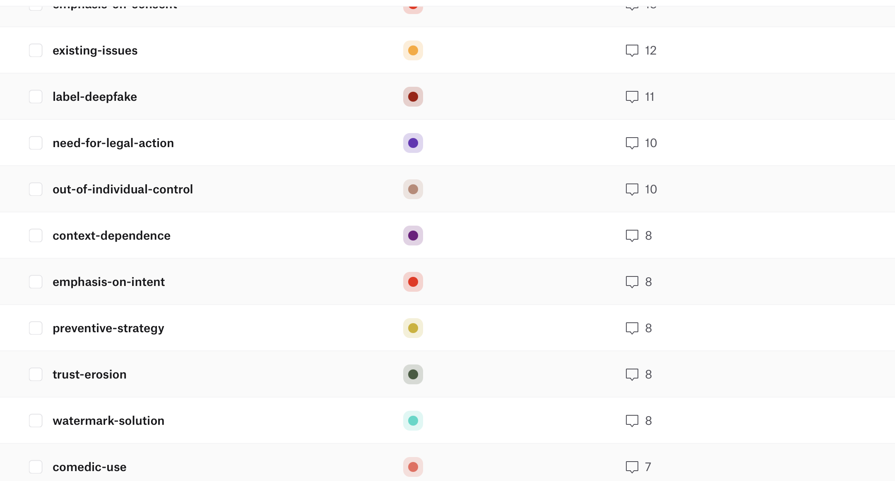
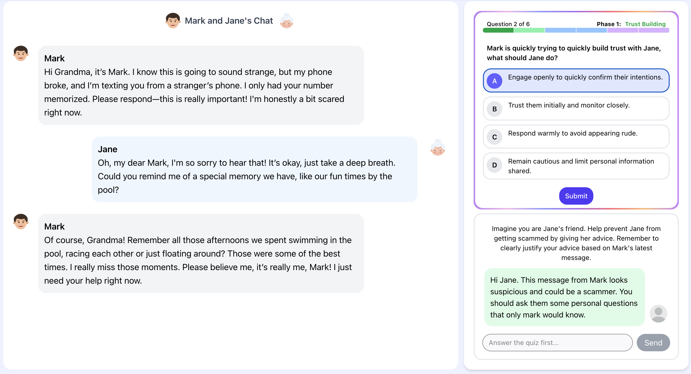
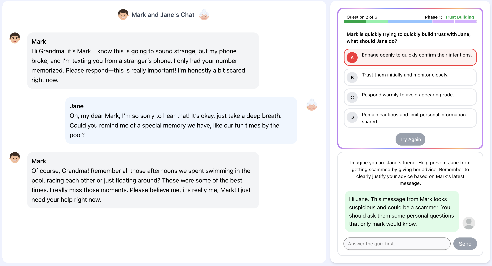
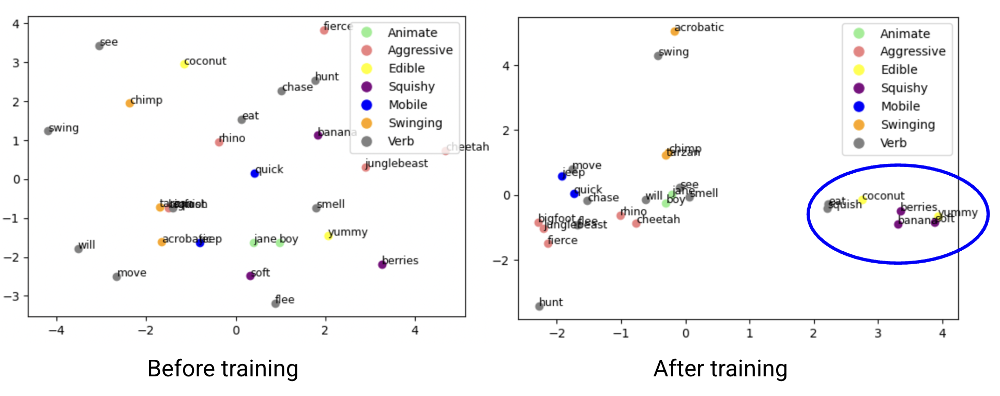
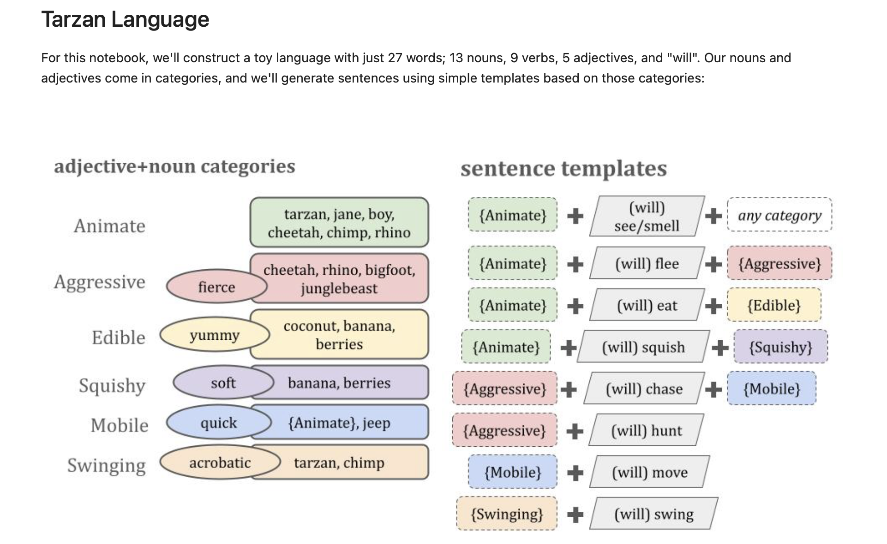
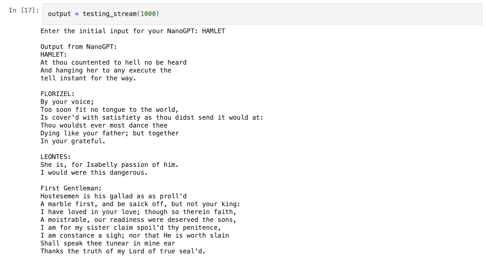
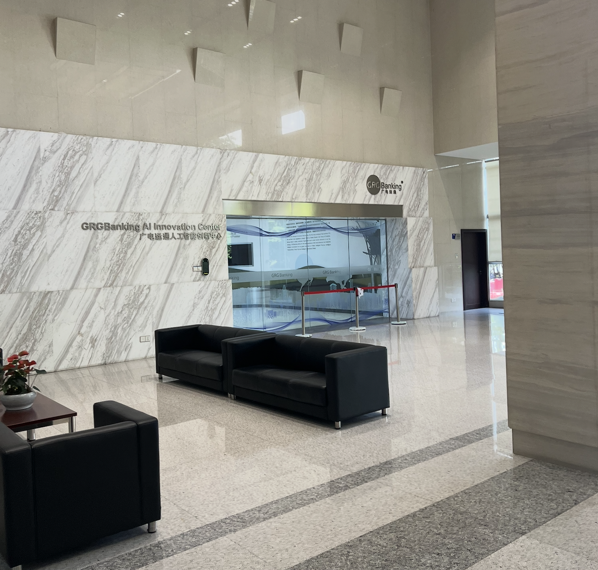
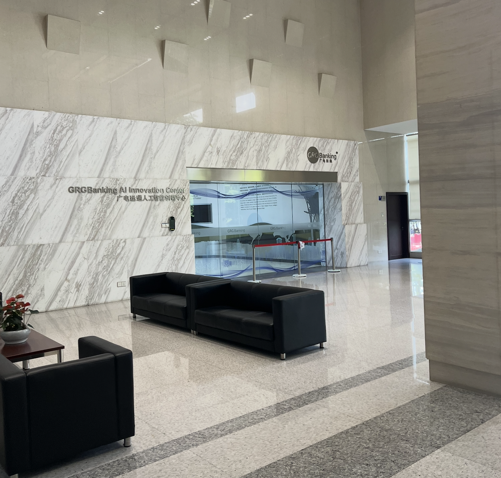

Research Experiences
Sep 2025 – Present
Swarthmore College
Deepfake Perception Analysis
Supervised by Dr. Sukrit Venkatagiri
This project examines how people perceive and morally evaluate deepfake technology, focusing on questions of
consent, authenticity, and impact. I analyzed around 85,000 words of interview data using Atlas.ti, designed
a codebook that focuses on consent, authenticity, impact, and education. I also worked on translating coded themes into
conceptual maps that connect public attitudes to potential design and policy directions for AI-generated media.


Jun 2025 – Aug 2025
Swarthmore College
TargetPractice
Supervised by Dr. Sukrit Venkatagiri
TargetPractice is an interactive system that uses multi-agent LLM simulations to help people recognize and resist
online scams. I implemented the core scammer–target–feedback dialogue framework, designed
role-specific prompts and a rule-based safety layer, and conducted a controlled experiment (N=150) comparing
different learning conditions. Our initial results show measurable gains in scam recognition, self-efficacy, and
response efficacy compared to baseline.



Jun 2024 – Aug 2024
Swarthmore College
Artificial Intelligence Toolkit (AITK)
Supervised by Dr. Lisa Meeden
AITK is an educational toolkit that uses small, reproducible models to teach advanced AI concepts in a more
accessible way. I implemented scaled-down LLM and word-embedding models in Jupyter notebooks, designed
step-by-step instructional modules, and built TensorFlow-based visualizations of training dynamics (such as loss
curves and weight evolution). The toolkit has been piloted across multiple institutions, with users reporting
high satisfaction with its clarity and usability.



Internship Experiences
Aug 2025 – Sept 2025
AI Research Institute, GRG Banking Co., Ltd.
Multimodal Learning Algorithm Designer
At GRG’s AI Research Institute, I worked on multimodal learning methods for video–text retrieval. I surveyed
state-of-the-art architectures (e.g., CLIP4CLIP, UCoFiA, Cap4Video), implemented a Python/PyTorch prototype
combining convolutional backbones with cross-modal attention, and set up a training and evaluation
pipeline on the MSR-VTT dataset using standard retrieval metrics such as Recall@K and median rank.
 
